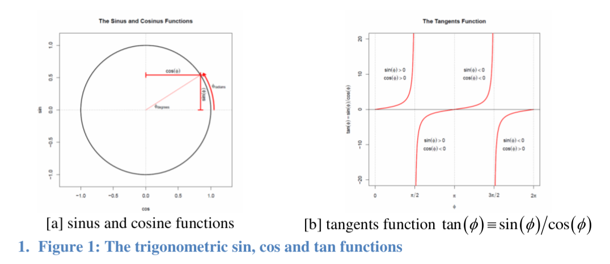

Week07: Poor Man’s Fourier Analysis: Analysis of Periodic Data with Ordinary Least Squares
1 Modeling Periodic Variations in Sequential Data1
- We can model oscillating or circular data \(y(t)\), assuming a cycle length of \(\eta\) observations, by a periodic function
\[y(t) = \beta_0 + a \cdot \cos(2 \cdot \pi \cdot \lambda \cdot (t - \varphi)) + \varepsilon(t) \quad \text{where}\] (1.1)
- \(t\) is the index of the individual data points in an equally spaced sequence of data,
- \(a\) is the amplitude of the oscillation,
- \(\lambda = 1/\eta\) is the frequency of the oscillation, and
- \(\varphi\) is the phase shift in observations with \(\varphi \in [0, \eta - 1]\).
The phase shift is that index in the sequence of observations relative to the starting observation where the oscillation peaks for the first time, that is, the cosine function is at its maximum.
Example: for monthly temperature data with a cycle length of \(\eta = 12\) of equally spaced data points the frequency is \(\lambda = \frac{1}{12}\). The amplitude measures how high and low the temperatures swing around the average annual temperature measured by \(\beta_0\). Assuming the sequence starts at January, which is indexed by \(t = 0\), for summer temperatures on the northern hemisphere the phase shift will be \(\varphi \approx 7\), that is, the temperature peaks in August (the 8th month of the year).
This non-linear periodic specification in equation (1.1) with an unknown phase shift \(\varphi\) and an amplitude \(a\) cannot be directly estimated with OLS.
However, it has an equivalent linear model specification in the unknown parameters \(\beta_{cos}\) and \(\beta_{sin}\) given by
\[y(t) = \beta_0 + \beta_{cos} \cdot \cos(2 \cdot \pi \cdot \lambda \cdot t) + \beta_{sin} \cdot \sin(2 \cdot \pi \cdot \lambda \cdot t) + \varepsilon(t)\] (1.2)
The two proxy variables \(\cos(2 \cdot \pi \cdot \lambda \cdot t)\) and \(\sin(2 \cdot \pi \cdot \lambda \cdot t)\) only depend on the index \(t\) and the hypothetical frequency \(\lambda\). These proxy variables can be calculated for any given equally spaced sequence of data by using the sequence index \(t\) and a frequency \(\lambda\).
- After some algebra the amplitude can be expressed by
\[a = \sqrt{\beta_{cos}^2 + \beta_{sin}^2}\]
and the phase shift by
\[\varphi = \arctan(\beta_{sin} / \beta_{cos})\]
Important: see the discussion of cases below.
In most applications only the amplitude at a given frequency \(\lambda\) is of interest because its magnitude expresses the contribution of the particular oscillation to the series.
Note that a flat line has an amplitude of zero and thus does not contribute anything in explaining the variation of \(y(t)\).
Because the amplitude and phase shift are calculated non-linearly from the two estimated OLS parameters \(\beta_{cos}\) and \(\beta_{sin}\), their standard errors are not directly known and must be approximated by using the delta-method. See R-function
car::deltaMethod().The R-script SINCOSREGRESSION.R demonstrates this modeling approach with a simulated series. The amplitude and the phase shift as well as their standard errors are calculated in this script by the function
ampPhase().
1 In contrast to a full-fledged Fourier analysis, which evaluates the contribution of oscillations with a given frequencies to the periodic variability of a sequence of data over a the whole spectrum of frequencies, the proposed “poor man’s Fourier analysis” here only performs one evaluation at a given frequency. The contribution of an oscillation is measured in terms of its amplitude.
2 Review: Some Basic Trigonometric Rules
The following trigonometric definitions and relationships are frequently used:
The \(\sin(\phi)\) and \(\cos(\phi)\) functions in dependence of an angle \(\phi\) are graphed in Figure 1a for a standard circle with a radius of 1. Note: due to the Pythagoras theorem both functions satisfy the constraint \(\sin^2(\phi) + \cos^2(\phi) = 1\). Furthermore, the sin- and cos-functions are uncorrelated \(\int_0^{2\pi} \sin(\phi) \cdot \cos(\phi) \cdot d\phi = 0\).
This implies that both proxy variables \(\cos(2 \cdot \pi \cdot \lambda \cdot t)\) and \(\sin(2 \cdot \pi \cdot \lambda \cdot t)\) are also uncorrelated.
The tangents function is defined by \(\tan(\phi) \equiv \sin(\phi)/\cos(\phi)\) and is graphed in Figure 1b.
The relationship between angles in degrees and angles in radians is shown in Figure 1a. All angles \(\phi\) in this discussion are assumed to be in radians with \(\phi_{radian} \in [0, 2 \cdot \pi]\). The transformation between both angular measurement units is \(\phi_{degree} = \phi_{radian}/(2 \cdot \pi) \cdot 360\) with \(\pi \approx 3.1415\).

To retrieve an angle \(\phi\) from the point coordinates \((\cos(\phi), \sin(\phi))\) on the circle, one can use the inverse tangents function2 \(\phi = \arctan(\sin(\phi)/\cos(\phi))\).
However the tangents is not a bijective function, that is, it lacks a unique one-to-one relationship, and it has poles at \(\frac{\pi}{2}\) and \(\frac{3\pi}{2}\) (see Figure 1b), one needs to distinguish between three different cases for the ratio \(x = \sin(\phi)/\cos(\phi)\)
\[\phi = \begin{cases} \arctan(x) & \text{if } \cos(\phi) > 0 \text{ and } \sin(\phi) > 0 \\ \pi + \arctan(x) & \text{if } \cos(\phi) < 0 \text{ with either } \sin(\phi) < 0 \text{ or } \sin(\phi) > 0 \\ 2 \cdot \pi + \arctan(x) & \text{if } \cos(\phi) > 0 \text{ and } \sin(\phi) < 0 \end{cases}\]
to obtain the desired angle \(\phi\), which is equivalent to the phase shift.
2 One needs to work carefully here, R provides two different arc-tangents functions. The function atan2() provides direct results but cannot be used with the car::deltaMethod() function. The function atan() requires the user to first distinguish between the three different cases. The function atan() work well with car::deltaMethod().